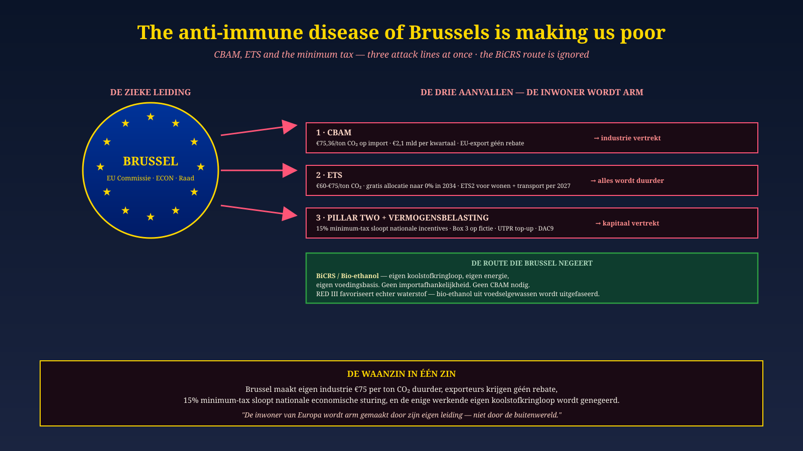

Malta · Lead Brussels · 19 June 2026
The anti-immune disease of Brussels is making us poor
CBAM, ETS and Pillar Two — three attacks at once. The BiCRS/Ethanol route is being ignored.
Since 1 January 2026: €75 per tonne CO₂ on European industry. €2.1 bn per quarter. Exporters get no rebate. 15% minimum tax dismantles national industrial policy. And the only working European carbon cycle — BiCRS / bio-ethanol — is ignored in favour of imported hydrogen. Three attacks, one leadership, one impoverished citizen.
Read the Brussels diagnosis →